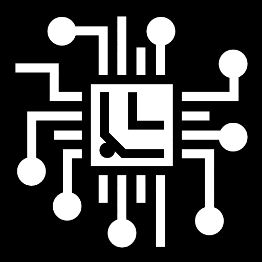

Mathematics
Having an emphasis area in Mathematics, I have taken classes in calculus, complex analysis, differential and partial differential equations, Fourier series, perterbation theory, and other engineering applications outside of the requirements of the computer science ciriculum. We used these tools to solve everything from problems in physics, such as the heat equation or quantum mechanics, to demontrating abstract mathematical truths, such as the residue theorum and its applications to solving integrals. Additionally, I have taken classes in computational computing, helping me to apply compuational methods to implement all of these things on a computer.
Computational Linguistics and Ai
I have a significant interest in Ai and Computational linguistics and am taking classes on these topic. At the request of several linguists, I have contributed to the Wiktionary project by creating LUA scripts which display the expected conjugations of certain verbs in the old Mercian and Northumbrian languages, a feature which had long been desired by the students of those languages. Although this project is incomplete, other developers have made adjustments to the project and I have plans to continue working on it with those same linguists in the near future.

Software Engineering
I have several years of experience programming in C++, C#, Java, Python, LUA, Assembly, and other programming languages. I have used tools like QT, Java FX, Visual Studio and VS Code, Unreal Engine, Github, and other tools to manage large projects. These projects were in areas including Video Games, Web Development, Database management, computational linguistics, and operating systems.